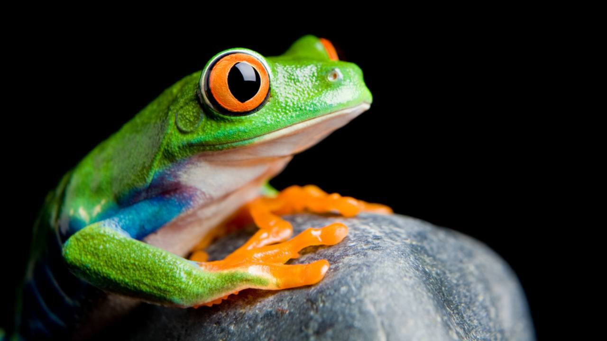
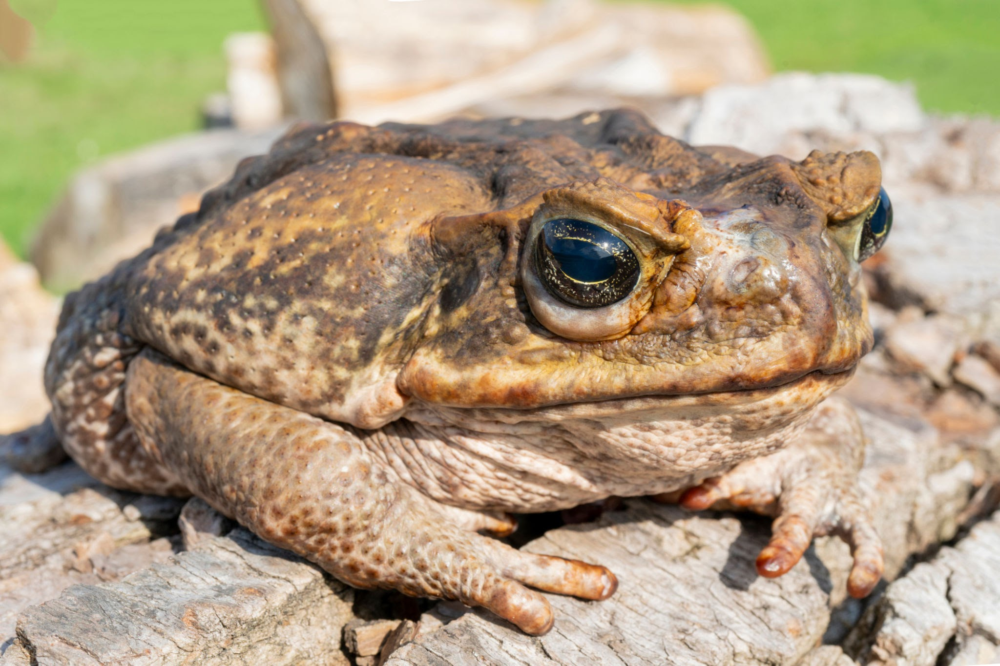
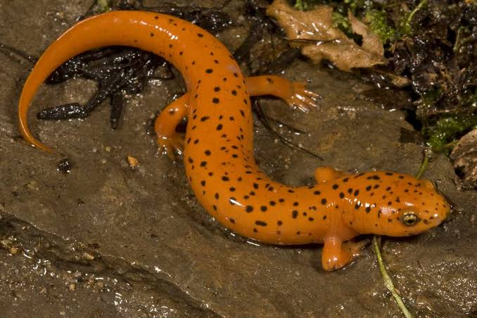

Su nombre proviene del griego y significa "ambos medios", pues su vida transcurre entre el medio acuático y el terrestre. Se tratan los ancestros de los anfibios del primer grupo de vertebrados que colonizó el continente y se adaptó a una vida semiterrestre. Se encuentran prácticamente en todas las regiones del mundo excepto en aquellas donde las condiciones climáticas son más duras como el Ártico, la Antártida y los desiertos más extremos. Los anfibios se caracterizan a diferencia del resto de vertebrados de pasar por diversos cambios y estadios morfológicos a lo largo de sus ciclos de vida. Transformaciones que de producirse de forma brusca reciben el nombre de metamorfosis.
Animales anfibios
Rana
Son un tipo de anfibios caracterizados principalmente por su gran capacidad de salto gracias a la morfología de sus extremidades posteriores, potentes y muy desarrolladas. Los ejemplares más pequeños miden aproximadamente 8 centímetros, mientras que los más grandes pueden alcanzar los 30 centímetros.
Sapo
El sapo es un anfibio: respira a través de branquias en su estado de larva y luego experimenta una metamorfosis que, al llegar a la adultez, deriva en el desarrollo de la respiración de tipo pulmonar.
Salamandra
Los caudados, conocidos como salamandras y tritones, son un clado de anfibios compuesto por 695 especies vivas que se distribuyen en los continentes del hemisferio norte con la excepción de unas pocas especies en el norte de Sudamérica.
